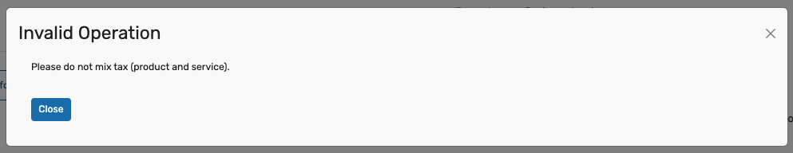
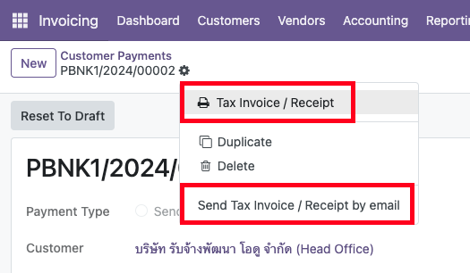
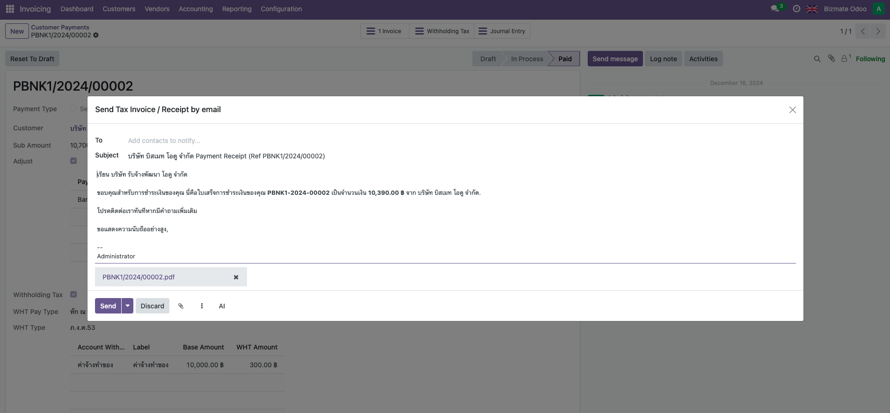
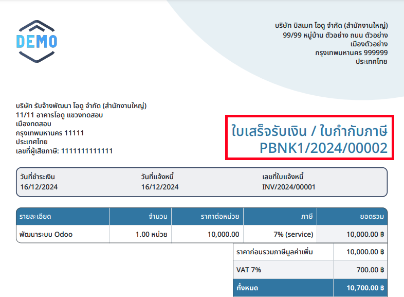
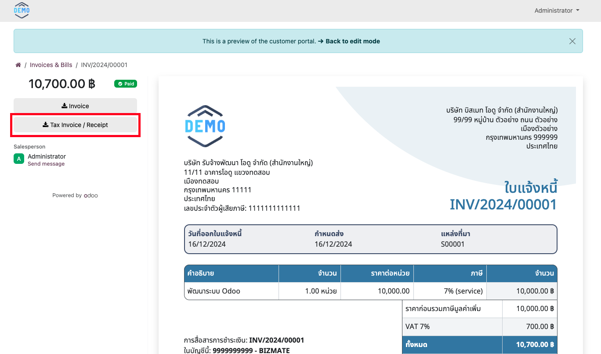

<div>
    <section class="mt-4 p-5" style="background-color: rgb(247, 246, 246); border-radius: 16px; box-shadow: 0 0px 10px rgba(0, 0, 0, 0.075) !important;">
        <section id="live-preview" class="p-5 bg-white">
            <div class="title">
                <p style="color: #1b1b1b; font-size: 28px; font-weight: 400;">
                    Live Preview Account
                </p>
                <hr/>
            </div>
            <div class="details">
                <p class="d-flex align-items-center w-100" style="color: #1b1b1b;font-size: 18px;">
                    Username: demo
                </p>
                <p class="d-flex align-items-center w-100" style="color: #1b1b1b;font-size: 18px;">
                    Password: demo
                </p>
            </div>
        </section>
        <section id="how-to-use" class="p-5 bg-white mt-5">
            <div class="title">
                <p style="color: #1b1b1b; font-size: 28px; font-weight: 400;">
                    How to use this module
                </p>
                <hr/>
            </div>
            <div class="details">
                <p class="d-flex align-items-center w-100 mt-5" style="color: #1b1b1b;font-size: 18px;">
                    This module will support only fully-payment with one-by-one Invoice and Payment only.<br/>
                </p>
                <p class="d-flex align-items-center w-100" style="color: #1b1b1b;font-size: 18px; font-weight: 400;">
                    Note: Module will change condition of report's title follow these case.
                    <ul style="color: #1b1b1b;font-size: 14px;">
                        <li>Customer Invoice (Tax: On Invoice) > Tax Invoice / Delivery Order (TH: ใบกำกับภาษี / ใบส่งสินค้า)</li>
                        <li>Customer Invoice (Tax: On Payment) > Invoice (TH: ใบแจ้งหนี้)</li>
                        <li>Customer Credit Note > Credit Note (TH: ใบลดหนี้)</li>
                        <li>Tax Invoice / Receipt (Tax: On Invoice or partial-payment) > Receipt (TH: ใบเสร็จรับเงิน)</li>
                        <li>Tax Invoice / Receipt (Tax: On Payment and fully-payment with one-by-one Invoice and Payment) > Tax Invoice / Receipt (TH: ใบเสร็จรับเงิน / ใบกำกับภาษี)</li>
                        <li>Vendor Bill > Vendor Bill (TH: บิลผู้ขาย)</li>
                        <li>Vendor Credit Note > Vendor Credit Note (TH: ใบลดหนี้ผู้ขาย)</li>
                    </ul>
                </p>
                <p class="d-flex align-items-center w-100 mt-5" style="color: #1b1b1b;font-size: 18px;">
                    1. After Install this Module, You will not able to mix tax point (On Invoice / On Payment) because it will be a condition of report's title.
                </p>
                

                <p class="d-flex align-items-center w-100 mt-5" style="color: #1b1b1b;font-size: 18px;">
                    2. On Payment View, You will see Tax Invoice / Receipt Print Menu instead of Receipts. You can send it by Email.
                </p>
                
                

                <p class="d-flex align-items-center w-100 mt-5" style="color: #1b1b1b;font-size: 18px;">
                    3. Tax Invoice / Receipt will show with correct report's title
                </p>
                

                <p class="d-flex align-items-center w-100 mt-5" style="color: #1b1b1b;font-size: 18px;">
                    4. User can download it from Portal.
                </p>
                
            </div>
        </section>
    </section>
</div>